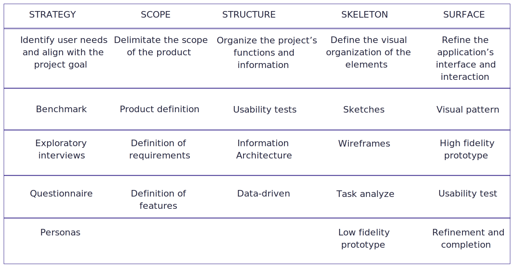
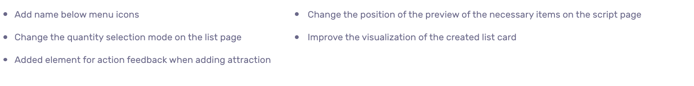
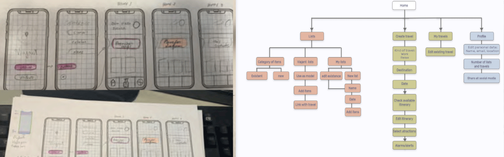
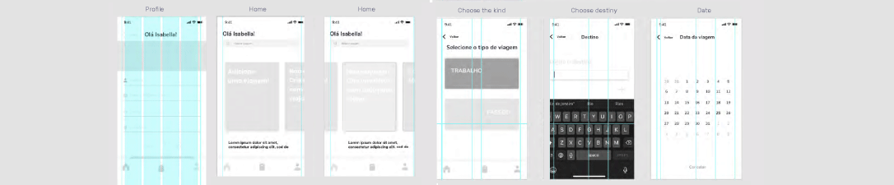
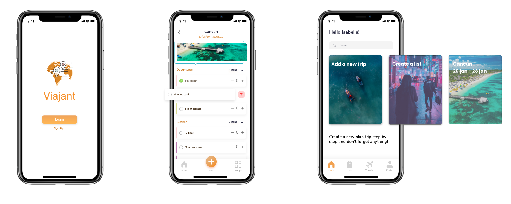
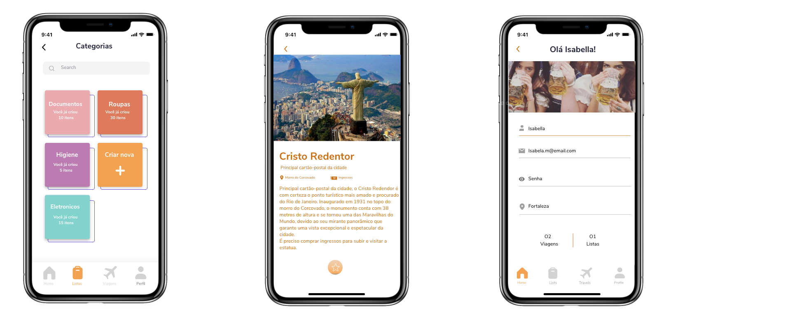

Process
Discovery; Research, Exploration, Ideation, User Test, Prototype, Validate; Analyze.
The context
The work presented here proposes the development of an application that helps in the management and planning of travels, made as a graduation project. The study aims to analyze the main needs of users who wish to travel and propose a more complete alternative through a combined methodology involving qualitative and quantitative research, user testing, and interface development in a navigable prototype. It then defines the target audience and identifies their needs by analyzing the collected data. The prototyping process begins after the requirements are defined and are followed by user testing. The project culminates in an analysis of the applied usability test and points out suggestions for changes to better application performance.
The challenge
How might I create a simple and easy-to-use tool that fulfills the needs of a large target group for simplifying the process of creating travel itineraries and packing bags?
Synthesize data: Extract the main and most relevant points of the discovery of the user's research and collected data.
User center design: Knowing who the users are and what are their needs to come up with a solution that fulfills them, always testing and getting feedback.
User interaction: To build a solution good enough to be a wish of the user and a helpful tool.
The process
To validate my idea, I put together a series of questions on the topic, with simple questions about travel before writing anything and not spending a lot of time, I did a quick exploratory search on my personal Instagram. There were around 5 questions with a text box open for answers and it generated much more interaction than expected. People answered not only the questions but complementary texts on how they overcame related problems and the need for organization. The main needs identified revolved around the process of creating roadmaps; difficulties in relation to documentation and culture; and pack bags.
A survey was used by observing approaches to similar apps problems, that is, planning from preexisting concepts and ideas, focusing on the graphical interface of the application. From the study of techniques and technical tools a methodology flow was adapted for this work.
tableprocess.svg

Main discoveries
Definition of the public, scope and limitation of functionality
During the strategy phase, various user pains and weaknesses were discovered in competing applications. An analysis of the responses was made 250 responses to the questionnaire and interviews, and thus the scope of the product was defined:
• Create editable travel itineraries, with a gallery of sights to add, options for alerting the time and information about location, necessary items and price;
• Create an editable travel list with predefined and editable item categories, linked to created trips and with weather forecast.
Thus, it was possible to see a clearer picture of what will be included in the application, followed by the creation of personas. The next step, after the scope plan, was to develop the conceptual framework for the application that explains how the requirements and parts fit together to form the whole.
Some relevant points found:

Thinking about interface
The concern in the construction of the skeleton of this project was to organize the elements and their functions in such a way that the interaction process was easy to understand, maintained consistency and used patterns that were already known by the user.
It was created in a conceptual map of the application to reproduce the relationships that the pages of the application use. The available functions come from research with users and references that were analyzed and limited to a final prototype with better performance.


Testing iteration and feedbacks
Overall the tests had good results and the prototype received praise. The result of the tests and the navigation flows initially suggested, had fewer interpretation problems than expected, both with regard to the design of the interface and in limiting the feedback of each user action. It can also be concluded that some mistakes were caused by the lack of clarity in the interface information and in the research script. There were also small interaction errors, such as deleting an item from the list, some despite quickly concluding that they should slide the card, they slid to the opposite side first, and when asked they said that by the disposition information (the text on the right, figure were made to slide to the side contrary).
Considering all the points analyzed, the list of modifications to be performed on the final prototype follows:
Learnings and considerations


This project worked on the dynamics between the user and the system, shaping it according to your personality and emotions. The layout of the screens developed, seek to add emotion to the application, creating a link between user and software, which can be acquired by the need to use it. With the possibilities of a growing digital market, the system is based on a differentiated service field, which makes the project viable and presents several possibilities for monetization within its functions. An example would be to limit the number of trips or lists to created, turning the resource into infinity just a paid version of the app. Therefore, even with the route adaptations, the general objective of the project consistent with the development of the interface of a device application mobile device that would assist the process of organizing a trip in a satisfactory way, it was achieved.
Even though it was not mapped on this project I see the big market potential and I would like to perform in the future a marketing and pricing analysis towards the development.
For more information please check my portuguese post on medium:
https://medium.com/@jessicabpontes/um-estudo-de-caso-app-viajant-f95901a012d9